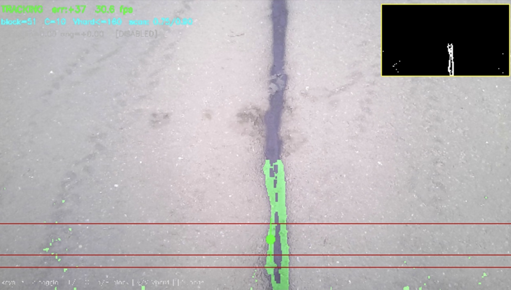
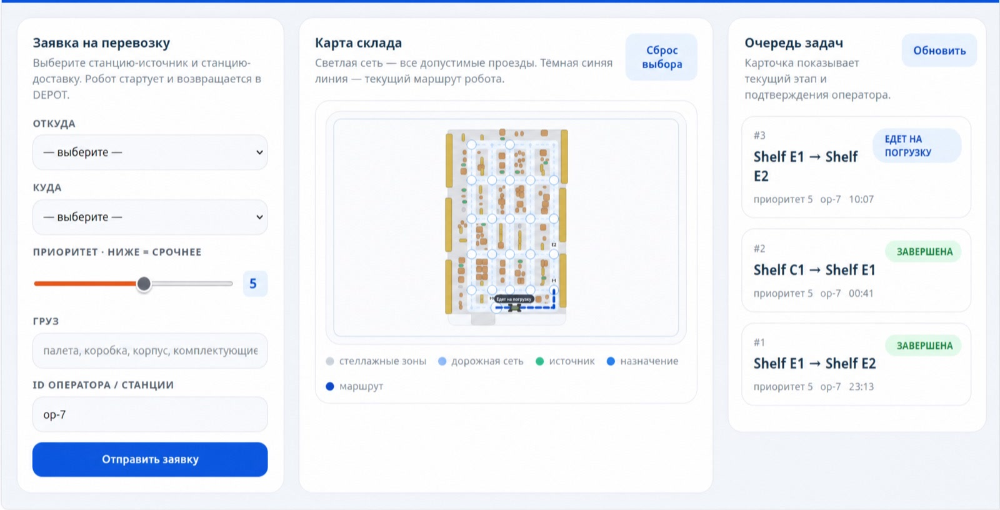
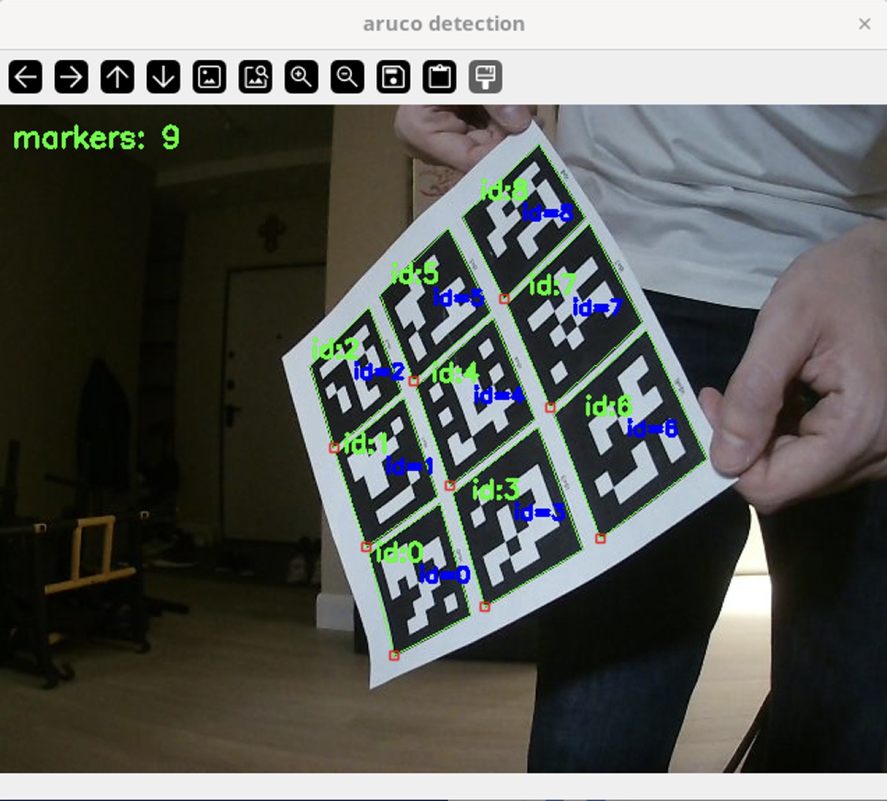
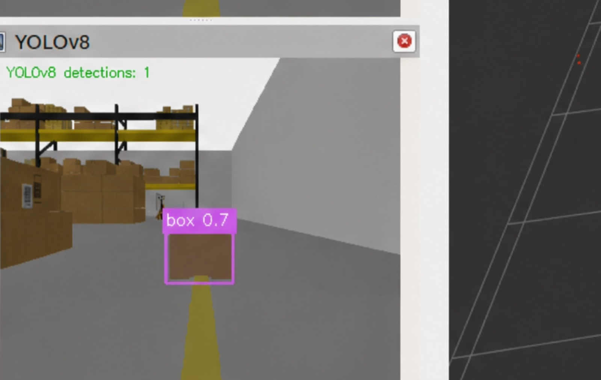
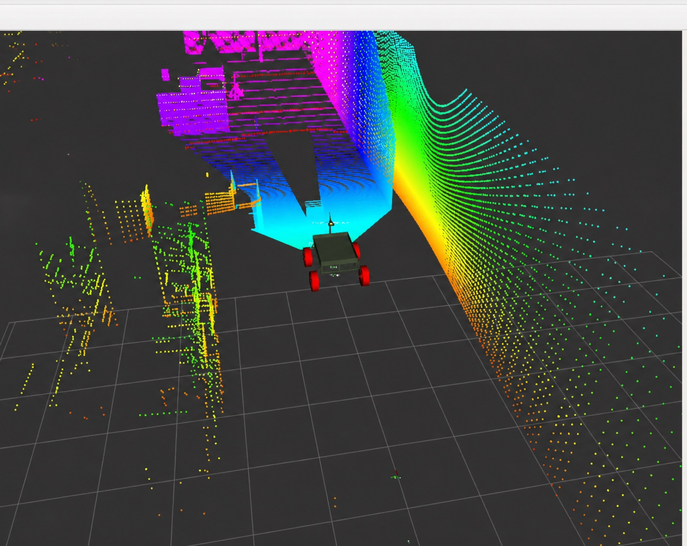
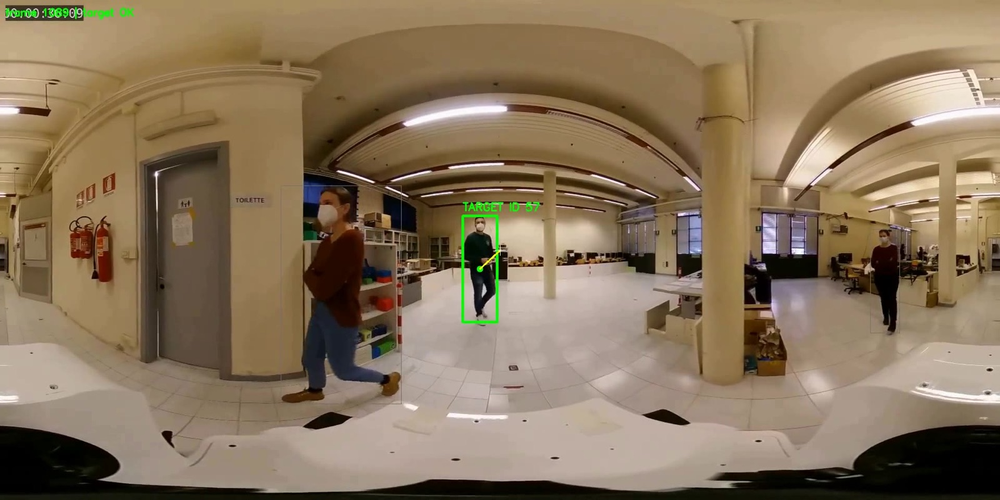
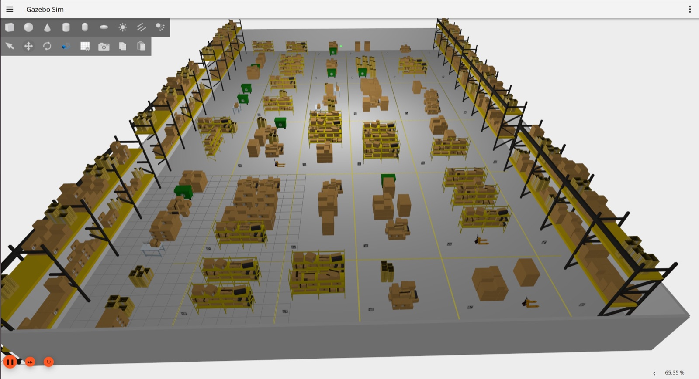
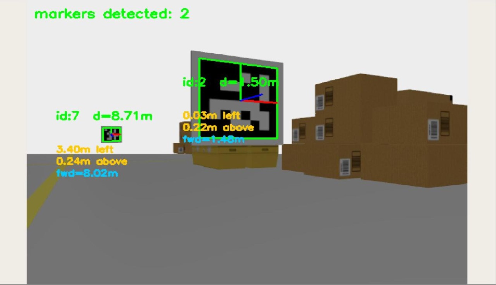
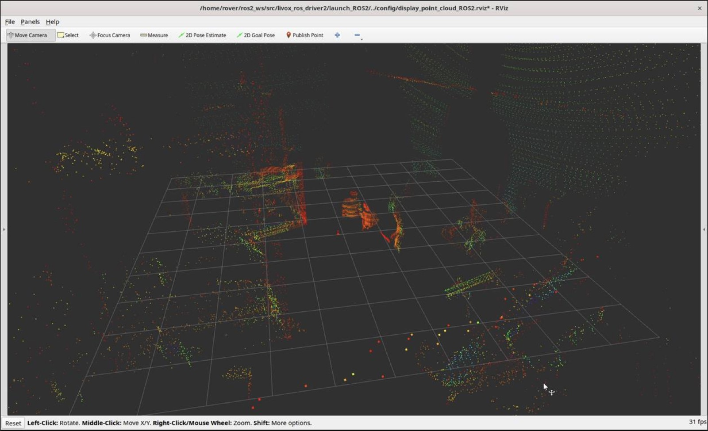
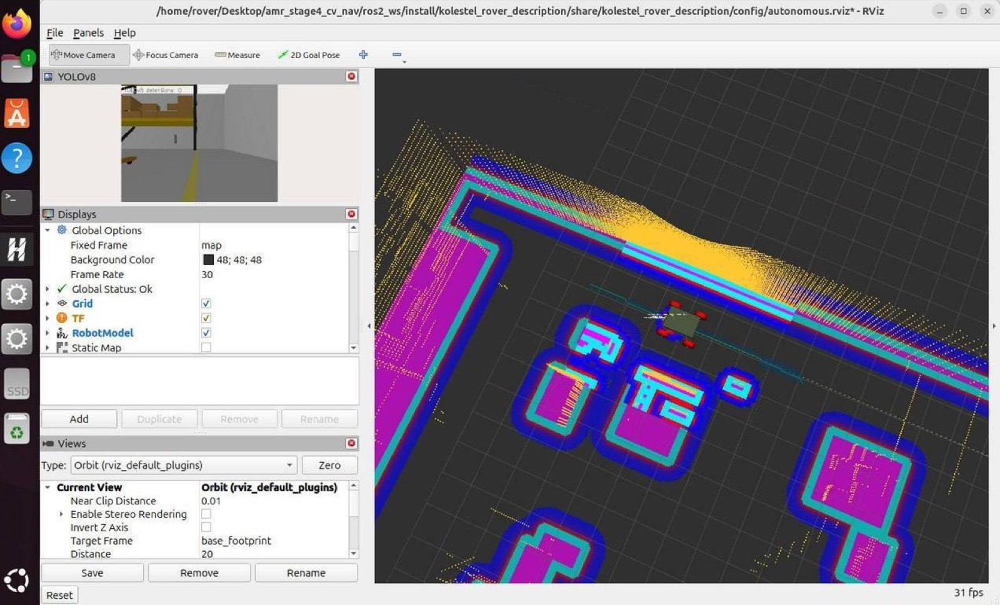

Stick-to-line
An HSV mask finds the painted aisle; a P-controller turns its offset into wheel speeds. 2.4 cm mean cross-track error.
Bachelor's thesis · HSE Faculty of Computer Science · 2026
A four-wheel mobile robot that maps a warehouse and plans every route — all on-board, with no Wi-Fi, no GPS and no cloud.
The platform
A 162-part four-wheel chassis, modelled from scratch and carried into the real world. Drag to explore it.
Drag to rotate · scroll to zoom
One robot, four problems
Each layer of the problem is solved on its own. The core of each is built and validated in a Gazebo simulation, with the first pieces already running on the physical rover — together, a path toward a robot you can simply tell “take this there.”
The path-planning core, a graph of the whole facility and the planners that compute the optimal route, plus the operator-interface front-end and field testing on the rover.
02The system that puts those routes to work, a ROS 2, Gazebo, Nav2 simulation pipeline and a FastAPI dispatch back-end that lets staff task the robot offline.
03One camera that follows lines, reads markers, names obstacles and catches what the LiDAR misses.
04A light classical stabilizer and the tracking that keeps a person locked in frame while the robot rolls over uneven floors.
02 · Operator system
A progressive web app served straight from the robot's mini-PC over the local network. A FastAPI backend with embedded storage turns a staff request into a dispatched mission — entirely offline.

The operator console: a delivery request, the live facility map with the robot's current route, and the task queue — all served from the robot over the local network.
03 · Computer vision
A single camera runs four independent channels, each covering a specific blind spot of a LiDAR-only stack. No GPU, no cloud — every model fits the on-board mini-PC.

An HSV mask finds the painted aisle; a P-controller turns its offset into wheel speeds. 2.4 cm mean cross-track error.

Printable markers and solvePnP give absolute pose fixes that cancel odometry drift — ≈10× lower position error.

A lightweight YOLOv8n labels boxes, pallets, shelves and people — so an obstacle arrives as “cardboard box”, not a blob.

A depth layer catches low obstacles that sit below the laser plane and feeds them to the planner, so it can stop for a box the LiDAR alone would drive into.
04 · Video stabilization & tracking
A camera on a moving robot jitters — and jitter breaks the very tracking that lets it follow a person. The pipeline has two halves: a lightweight classical stabilizer (Lucas–Kanade flow + a Kalman RTS smoother) cleans the stream first, then a person detector and a motion tracker keep one target locked frame to frame.

Simulation & sensors
Navigation and perception exercised in the Gazebo simulation and on live LiDAR — point clouds, ArUco pose fixes, the warehouse map and the Nav2 costmap.




Results
On-board sensing, vision, stabilization and planning — ready to work where there is no network and no infrastructure.